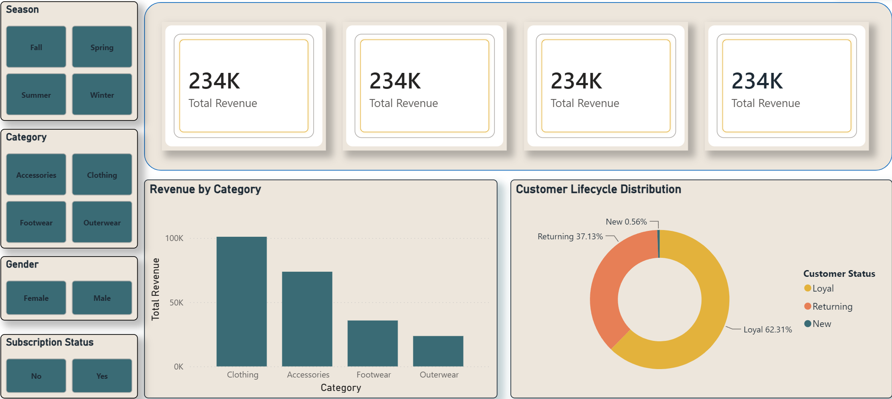
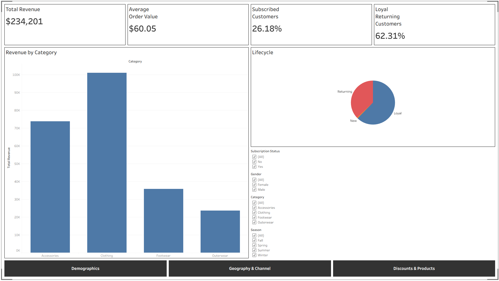
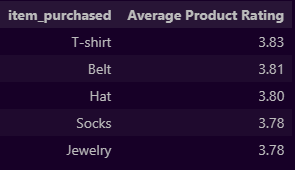

Case Study — Retail Analytics
What separates a loyal customer from a one-time buyer? An end-to-end analysis of 3,900 retail transactions to find where subscription, discounting, and shipping choices actually move loyalty.
The business problem: the retailer wanted to know which levers, subscription status, discounting, shipping speed, purchase frequency, actually correlate with a customer moving from "new" to "returning" to "loyal," so marketing spend could follow the signal instead of a hunch.
The data: a transaction-level export covering demographics, product category, purchase amount, review rating, subscription and discount status, shipping type, and purchase frequency across four categories: Clothing, Accessories, Footwear, and Outerwear.
Clean & profile in Python. Loaded the export in pandas, standardized column naming and category labels, checked for duplicates and nulls, and profiled distributions for purchase amount, rating, and frequency before any visual work.
Segment the customer base. Grouped customers into New, Returning, and Loyal segments and cross-tabbed each against subscription status, discount usage, and shipping type to isolate what loyal customers do differently.
Build the dashboard. Modeled the cleaned table in Power BI for the internal, filterable view (by category, region, segment) and rebuilt the headline visuals in Tableau Public for a shareable, embeddable version.
Loyalty is the default outcome, not the exception: 62% of customers in the dataset are already classified Loyal versus just 1% New; meaning most of the visible dataset is retention behavior, not acquisition behavior, which reframes the whole analysis toward "what keeps loyal customers loyal."
Subscriptions are underused: only 26% of customers are subscribed, despite subscription customers skewing toward the loyal segment, a clear upsell target for marketing.
Purchase cadence clusters around quarterly: the most common repurchase interval is quarterly or annual rather than monthly, suggesting lifecycle email/reminder campaigns should be timed to a 3-month cycle rather than a 30-day one.
Clothing dominates volume: Clothing accounts for 44% of all transactions, more than double the next category (Accessories, 32%), so category-level promotions have outsized reach if targeted at Clothing first.

Power BI Dashboard
Tableau Dashboard
SQL Average Product Rating Chart